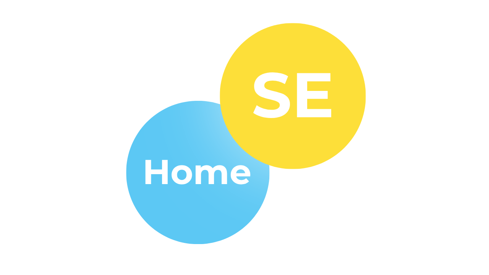
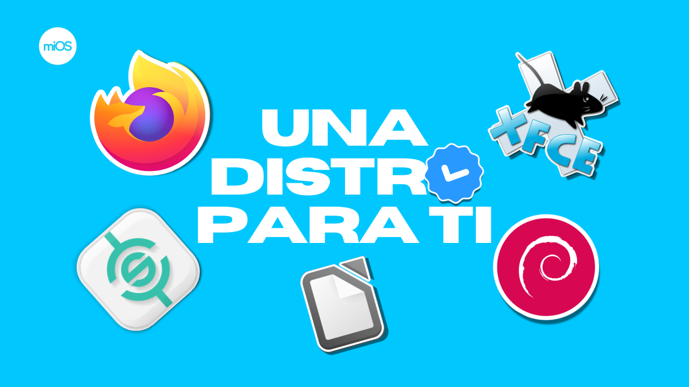
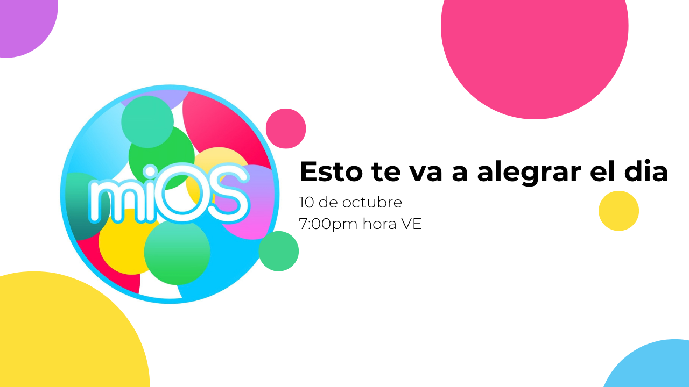
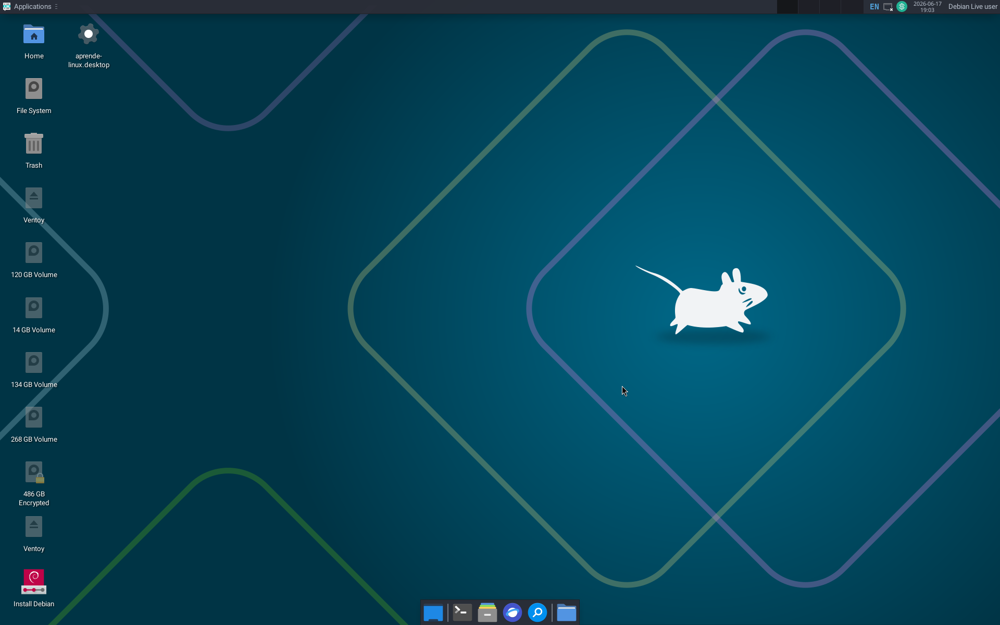
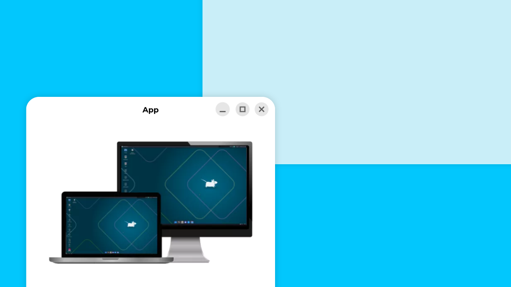
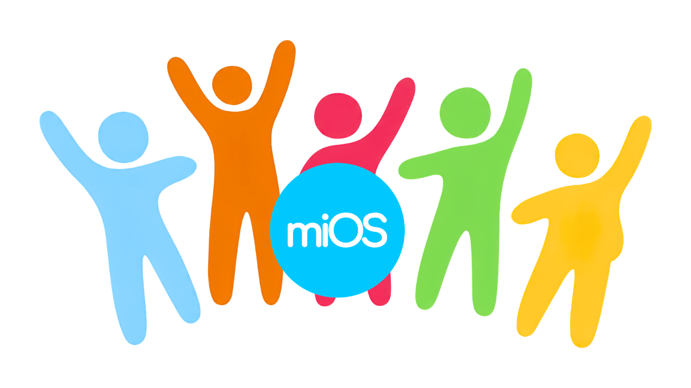

Ediciones
Ediciones listas para probar, instalar y usar con una base estable y clara.


Ver eventos
Ediciones listas para probar, instalar y usar con una base estable y clara.
Rendimiento, libertad de uso, personalización y una experiencia orientada al usuario.


Una interfaz limpia, legible y moderna pensada para ser cómoda en cualquier equipo.
Un proyecto abierto para aprender, compartir, colaborar y crecer junto a la comunidad.
